Documentation visuelle
Parcourir l'application, capture par capture
Toutes les images de cette page sont des captures de l'application en cours d'utilisation, à 1600 × 900. Le projet illustré a été construit uniquement par l'interface : menus, formulaires, saisies clavier, puis simulation. Aucune donnée n'a été injectée dans le document, aucune image n'a été retouchée. Les repères jaunes sont posés en HTML : survolez une note (ou passez au clavier) pour encadrer la zone correspondante, cliquez le repère pour le figer.
- 1 · Le canvas et son cadre
- 2 · Poser une carte Module
- 3 · Le menu d'ajout groupé
- 4 · Déclarer une fonction
- 5 · Construire une expression
- 6 · Lire l'arborescence
- 7 · Publier : les exports
- 8 · Emprunter : les imports
- 9 · Types, tableaux et point d'entrée
- 10 · Afficher et conditionner
- 11 · La flèche de dépendance
- 12 · Le projet entier
- 13 · Notes et images
- 14 · Simuler et déboguer
- 15 · CFG et dépendances
- 16 · Transpiler
- 17 · Thèmes, langue, grille, zoom
- 18 · Ce que l'interface refuse
- 19 · Le fichier .sp3
- 20 · Limites assumées
1 · Le canvas et son cadre
NavigationL'application tient dans une seule fenêtre sans barres figées : un canvas infini et un volet d'actions, replié en permanence sur le côté. Le quadrillage est discret, courbé vers les bords et assombri en périphérie, ce qui rend le déplacement lisible sans borner le document.
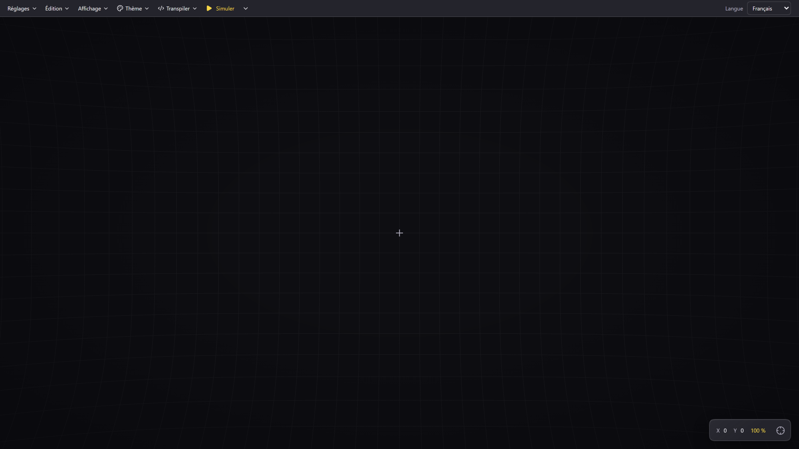
- Le volet unique : fichiers récents, import/export, édition (annuler, rétablir), affichage, thème, réglages et simulation. Tout le reste se passe sur le canvas.
- Les commandes de vue — agrandir, réduire, recentrer, zoom 100 % — sont collées au statut pour rester atteignables sans déplacer la main.
- Statut du document : modules, nœuds et diagnostics à jour. Il change dès qu'une construction est ajoutée ou retirée.
- Le repère lui-même est une donnée d'affichage : les lignes sont courbées aux bords, la grille peut être mise droite pour aligner des cartes.
Déplacement : glisser avec le bouton gauche ou central dans le vide, ou flèches quand le canvas a le focus. Zoom : molette centrée sur le milieu de la vue, plafonné à 400 %, sans minimum appliqué ; glisser et zoomer se combinent sans saut ni réinitialisation.
2 · Poser une carte Module
StructureUn clic droit dans le vide ouvre le menu du canvas. « Créer un module » pose une carte immédiatement renommable : le titre est le nom du module source, pas une étiquette locale.
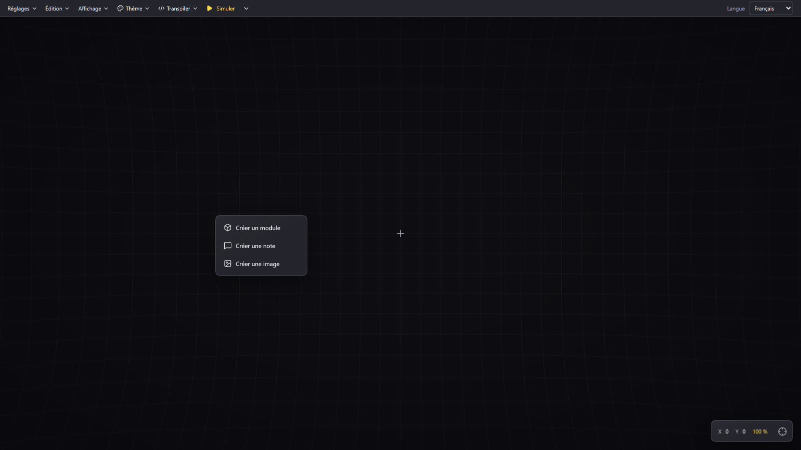
- Menu du canvas : trois créations seulement — module, note, image. Le menu se referme par un clic dans le vide ou par Échap, sans effet de bord.
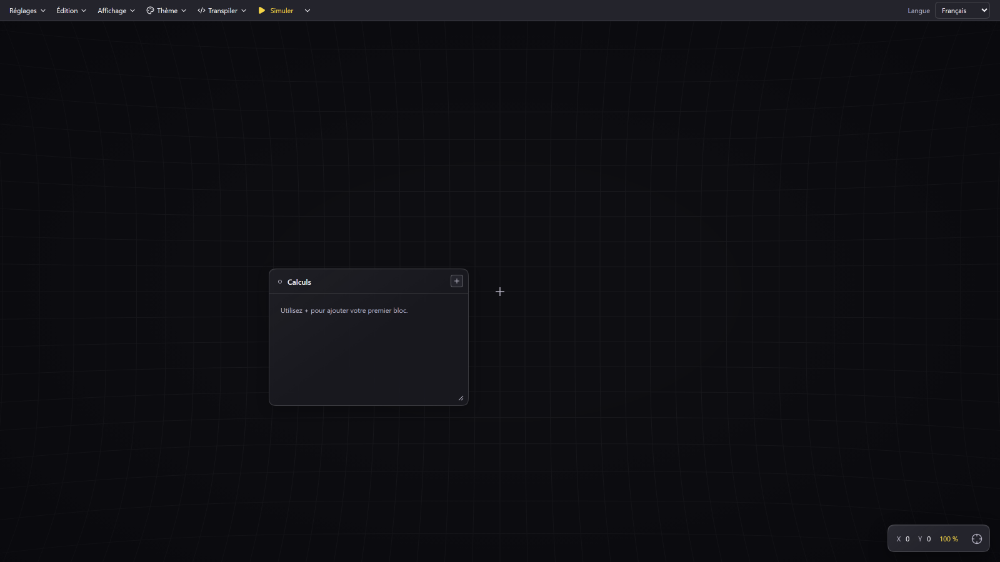
- La carte Module est à la fois l'unité de rangement et l'unité de portée : tout ce qu'elle contient appartient à ce module, rien ne franchit sa frontière comme enfant syntaxique.
- Titre renommable en place ; il engage le nom du module dans le modèle logique.
- Le bouton de la carte ouvre les constructions racines — uniquement des fonctions et des types, car un module n'admet pas d'instructions libres à sa racine.
- Invitation explicite quand la carte est vide. Elle disparaît dès la première construction : c'est un état du document, pas un message d'aide figé.
4 · Déclarer une fonction
FormulaireChaque construction se crée par un formulaire, jamais par un glisser-déposer de blocs déjà formés. Le formulaire valide avant d'écrire : un refus laisse la source inchangée.
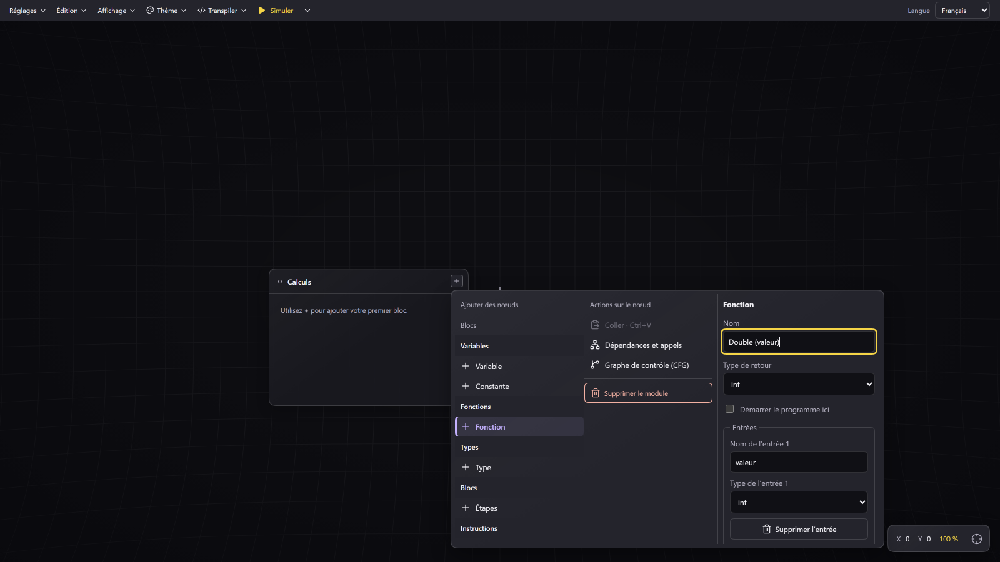
- Le panneau de formulaire apparaît à droite des colonnes d'actions, là où le canvas reste lisible. Il se déplace et se redimensionne.
- Le nom est une donnée du modèle logique, pas une étiquette d'affichage ; il servira aux références et aux exports.
- Type de retour, choisi dans le catalogue des primitives.
voidn'est autorisé qu'ici : c'est le seul endroit où il a un sens. - Entrées ajoutées une à une : chaque
Parameterest un nœud réel du langage, avec son nom et son type, et n'existe que dans la liste de sa fonction. - Création effective : si le résultat est invalide, un message bloque l'écriture et rien n'est inséré.
Double. Une entrée valeur : int, retour int.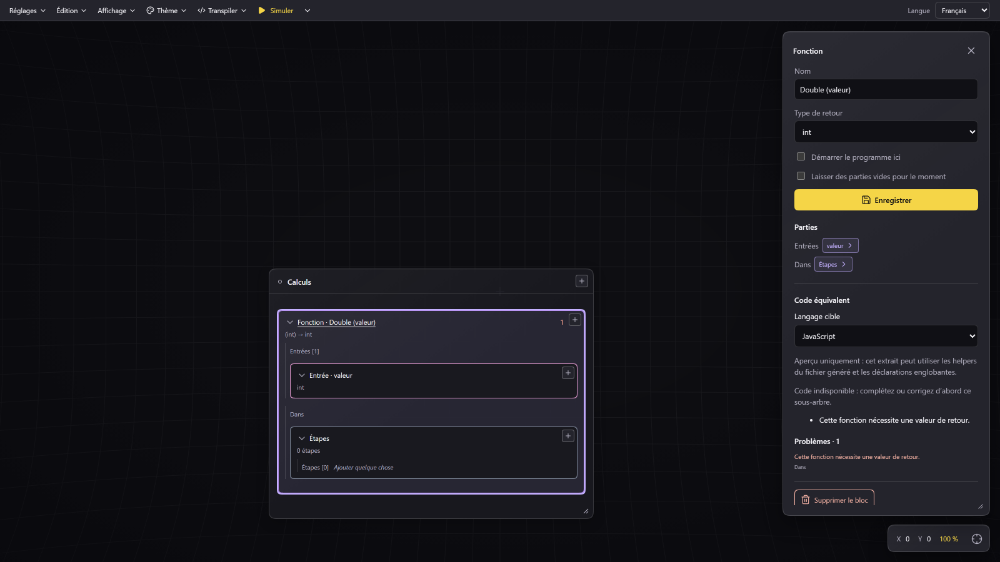
- Nœud fonction : replié sur son entête, il affiche sa signature réelle — nom, types des entrées, type de retour.
- Le paramètre, enfant de la liste
parameters. Sa couleur d'onglet vient de sa catégorie, pas de sa position. - Le corps, un bloc dont le slot
bodyest déjà occupé : il est donc montré comme conteneur « déjà utilisé », et les instructions s'ajoutent par son propre menu.
5 · Construire une expression
Saisie typéeUne valeur ne s'écrit pas dans un champ de texte libre. Chaque emplacement d'expression offre des modes — littéral, référence, opération, conversion, tableau, appel — et chaque mode redemande les types attendus. Un mode qui exige un type concret n'est proposé que si l'emplacement en attend un.
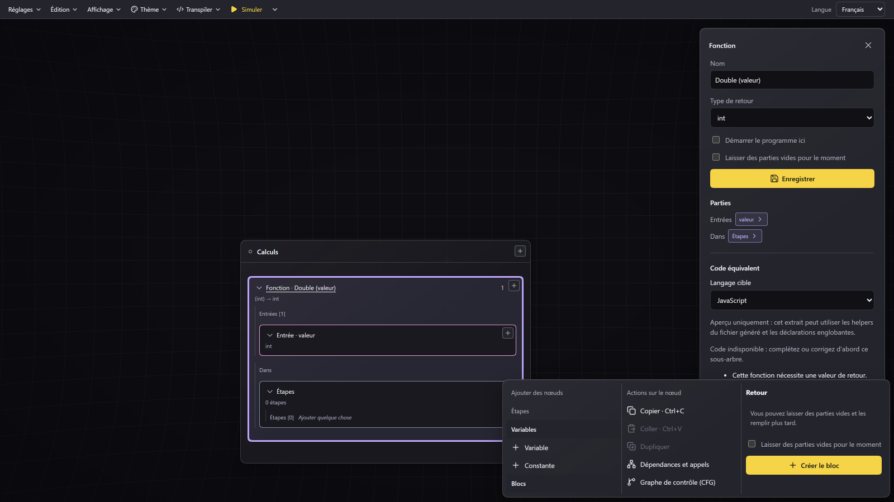
- Instruction
ReturnStatement: son unique slotargumentest une expression, optionnelle en apparence mais contrainte par le type de retour. - Le choix de laisser l'argument vide est explicite. Une fonction non
voidsans valeur de retour produiraRETURN_MISSING. - Créer le bloc : la validation d'insertion est refaite dans le moteur avant écriture, pas seulement dans le formulaire.
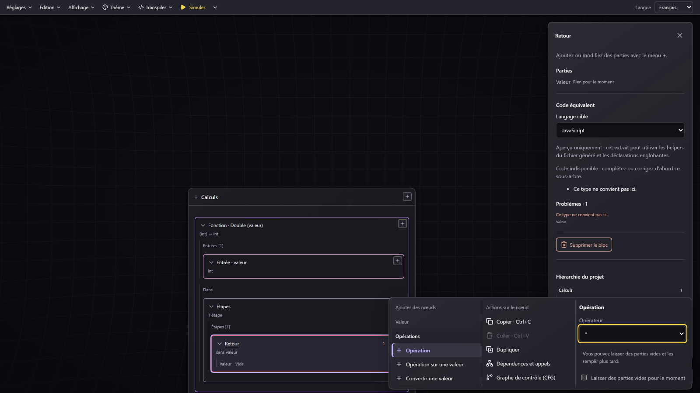
- Opération binaire : deux sous-expressions, chacune saisie dans son propre emplacement, chacune typée indépendamment.
- Opérateurs réellement disponibles pour le type attendu :
+ - * / %, comparaisons,and/or. Le type d'opérandes est demandé séparément, car aucune conversion implicite n'existe.
valeur * 2 comme opération.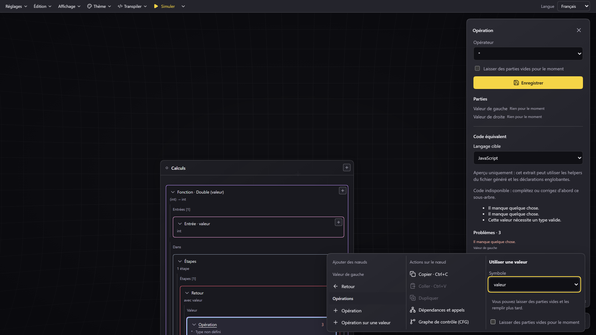
- Mode « Utiliser une valeur » : la liste vient des symboles accessibles dans la portée, imports compris, et non de tous les noms du projet.
- Choix du symbole
valeur. Une référence n'est pas un enfant syntaxique : elle ne déplace ni ne duplique la déclaration.
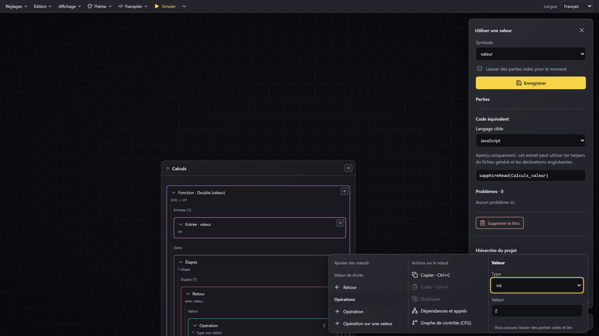
- Littéral typé explicitement : aucune inférence depuis la valeur saisie.
- Le type est choisi d'abord (
short int,short uint,int,uint,float,double,string,char,boolean). - La valeur est validée dans le domaine du type : fraction dans un entier, hors bornes, texte avec espaces mal formé — refus avant écriture.
2 de valeur * 2.6 · Lire l'arborescence
ReprésentationUne carte Module affiche l'arbre de ses nœuds. Chaque ligne est un nœud du modèle logique, plié ou déplié pour la lecture uniquement : la source, elle, ne se replie pas.
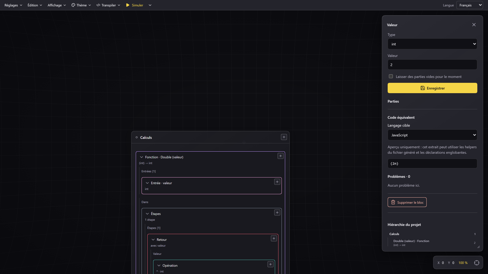
- L'instruction de retour, seule étape du corps.
- Le nœud
BinaryExpression: son type vient de ses opérandes, il ne porte aucune annotation de type. - La référence
valeur, résolue vers le paramètre. - Le littéral
2, typéintcomme son opérande de gauche.
return valeur * 2. Quatre nœuds, trois relations différentes : propriété, parenté syntaxique, référence symbolique.
Une annotation de type posée sur un opérateur ou une référence est une erreur structurelle
(STRUCTURE_INVALID) : le schéma refuse les types qui ne peuvent pas en porter, et
l'interface ne propose pas le champ.
7 · Publier : les exports
Interface de moduleSélectionner une carte ouvre son panneau de propriétés : la hiérarchie du module, ses racines, ses exports et ses imports. Un export ne crée rien : il publie une déclaration déjà présente à la racine.
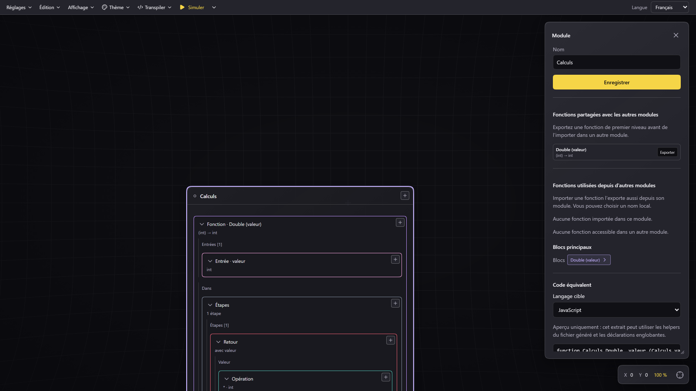
- Panneau flottant : déplaçable, redimensionnable, refermable. Il lit le document, il ne le réécrit pas silencieusement.
- Exportations publiées, avec le nom visible côté récepteur.
- La hiérarchie navigable du module : cliquer une ligne sélectionne le nœud correspondant sur le canvas.
- Racines du module, dans l'ordre syntaxique de
rootNodeIds— pas l'ordre du tableau global des nœuds.
Calculs.- L'interface d'export : une déclaration racine, un nom publié. Seules les déclarations racines sont proposées : un paramètre ou une variable locale ne peut pas être publié.
- L'ajout est validé par le moteur : doublon, cible absente ou déclaration non racine sont refusés avec un diagnostic.
Double devient public. Après cette action, un autre module peut l'importer.8 · Emprunter : les imports
IntermoduleUn import désigne une exportation précise d'un autre module et lui donne un nom local. C'est un lien symbolique, jamais une copie : la fonction importée ne devient pas un enfant du module récepteur.
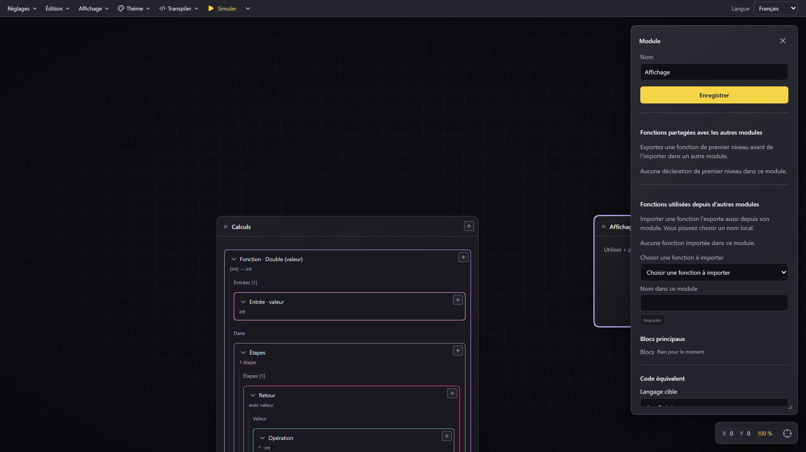
- Le panneau du module Affichage, qui va recevoir l'import.
- Formulaire d'import : il ne liste que les modules qui exportent réellement quelque chose.
- La cible, choisie parmi les exportations publiées. Pas d'import étoilé, pas de réexport, pas de chemin physique.
- Import de
Doubledepuis Calculs. - Nom local
Double: c'est ce nom qui sera visible dans les portées du module récepteur, et il peut différer du nom publié. - Ajout de l'import. À ce stade, aucune flèche n'apparaît : un import jamais utilisé n'est pas une dépendance.
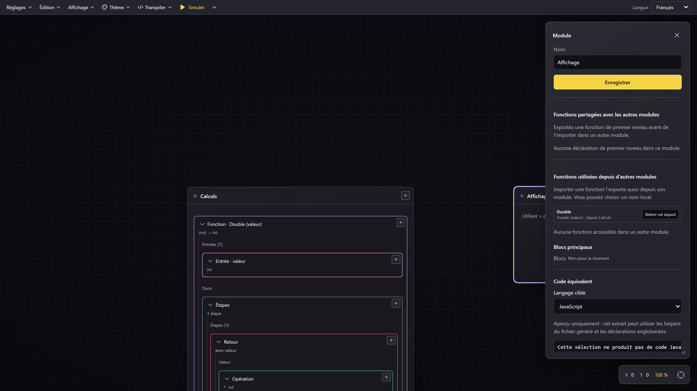
- Le panneau, après l'ajout.
- L'import figure bien dans la liste, avec son origine. Et pourtant le canvas ne montre aucune flèche : les liens sont agrégés depuis les références réellement résolues vers des symboles importés.
9 · Types, tableaux et point d'entrée
TypageLe typage est statique et strict : une variable, une constante et un paramètre déclarent leur type, chaque littéral porte le sien, et aucune conversion implicite n'existe entre deux types distincts.
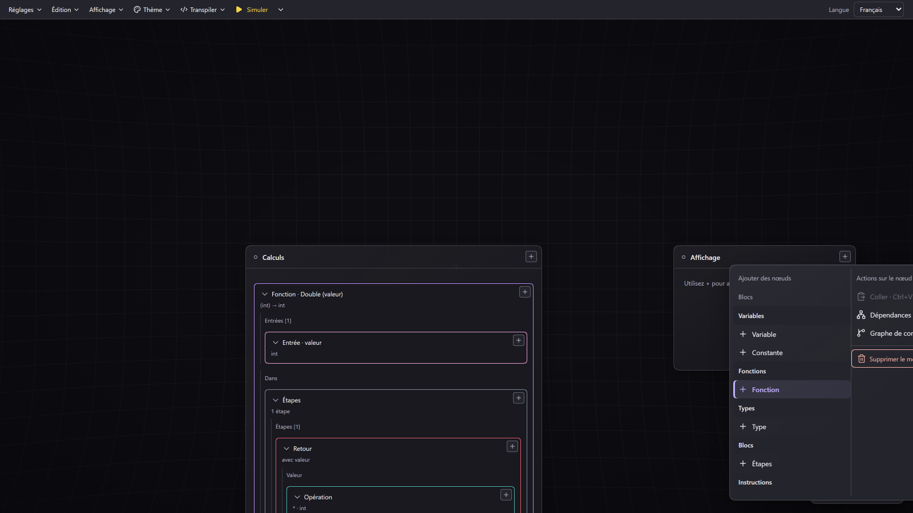
- Création d'une seconde fonction,
Principal, dans le module Affichage. - Marquer « programme de départ » pose
properties.entryPoint: true. Le marqueur est un booléen réservé aux fonctions, indépendant du nom :maintout court n'a aucun privilège. - Un seul point d'entrée par projet. S'il est déjà pris, la case est neutralisée ; et si deux en existed dans un fichier importé, le moteur signale
ENTRY_POINT_DUPLICATEsans supprimer les données.
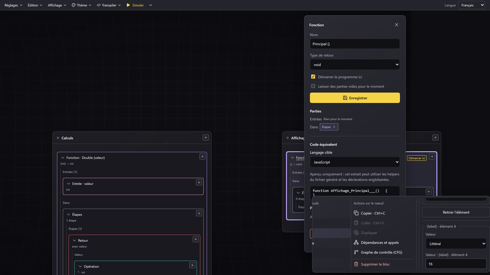
- Variable
nombres : int[]. Les tableaux sont des types construits à part entière : annotables sur les variables, constantes et paramètres uniquement. - Éléments saisis un par un, chacun dans son propre emplacement d'expression, et chacun tenu d'avoir exactement le type d'élément annoncé — sinon
TYPE_MISMATCHlocalisé par index.
[4, 8, 15, 16, 23, 42]. Trois constructions existent pour les tableaux : littéral, création bornée par une taille, accès par index.10 · Afficher et conditionner
Instructions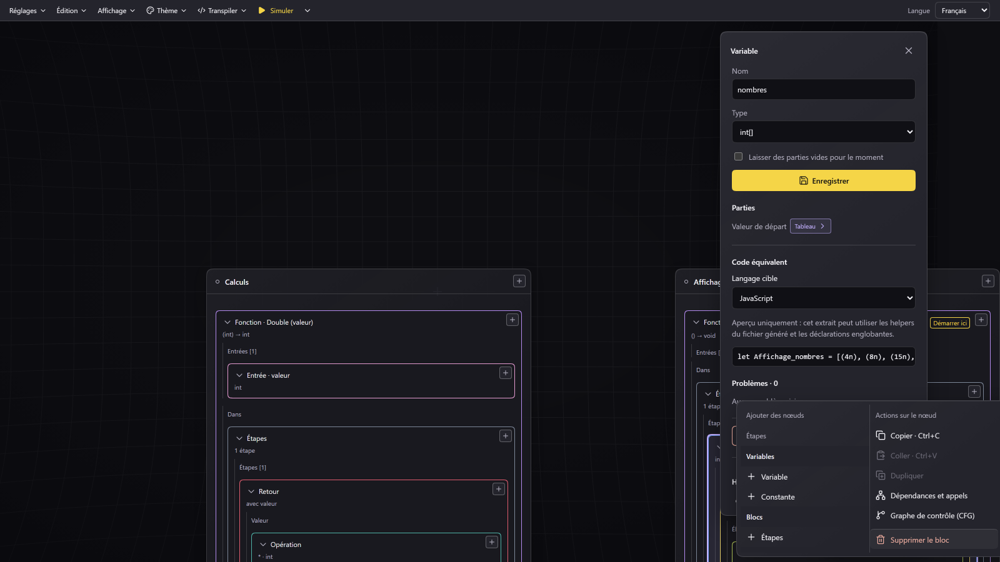
- Instruction
PrintStatement: elle ajoute la représentation textuelle de la valeur à la sortie de la simulation locale. C'est la seule capacité de sortie du simulateur. - La valeur affichée, en référence à
nombres. Unvoiden entrée est refusé :VOID_NOT_ALLOWED.
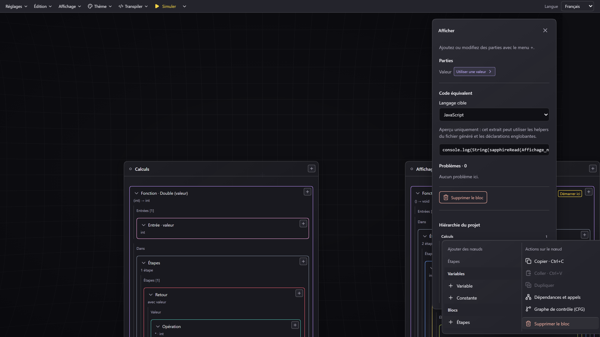
- Instruction
IfStatement:testbooléen,consequentbloc,alternatebloc optionnel. - Comparaison
>: le résultat estbooleanquelle que soit la nature des opérandes, mais leur type doit être numérique et identique des deux côtés. - Les deux sous-expressions, imbriquées dans le même panneau. La saisie d'une expression est récursive : chaque nœud enfant ouvre ses propres modes.
Si 15 > 10. La branche fausse est absente, ce qui reste valide.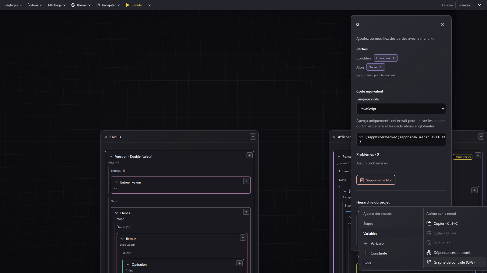
- Une chaîne littérale
"Le programme tourne", affichée dans la branche vraie. Le bloc Alors est unBlockréel, avec ses propres étapes et sa propre portée.
11 · La flèche de dépendance
Liens intermodulesUne instruction « Évaluer une valeur » reçoit une expression ; en mode appel, elle vise une fonction — notamment une fonction importée. C'est cet usage qui matérialise le lien.
- Instruction
ExpressionStatementportant unCallExpression: c'est la forme retenue pour appeler une fonction typée ou une procédure dans un bloc. - La fonction visée,
Double, proposée parce qu'elle est importée et visible dans la portée. - Argument
21: une expression indépendante, typée, contrôlée contre la signature. Un nombre d'arguments incompatible donneTYPE_MISMATCH.
Double(21). L'usage qui déclenche l'apparition du lien.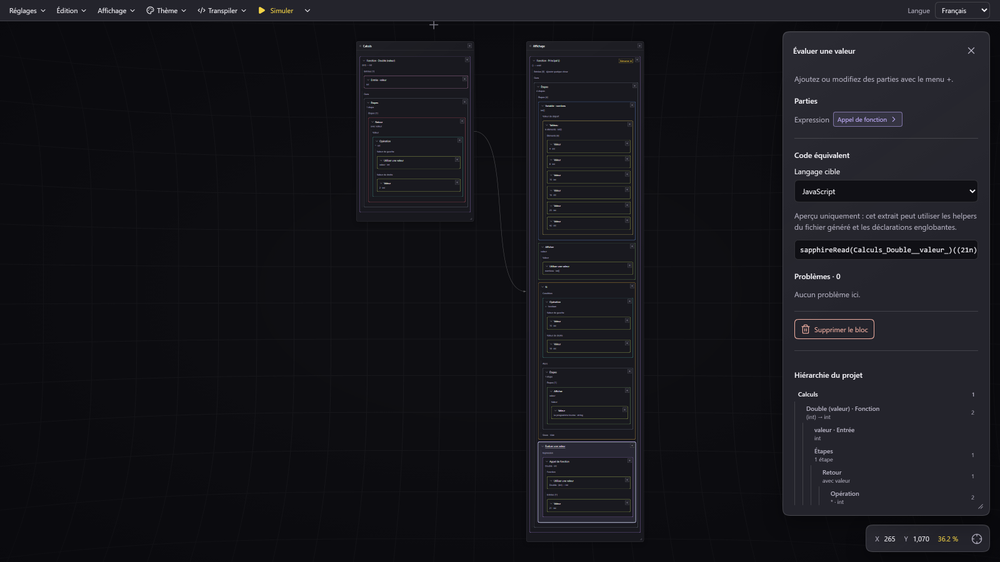
- Calculs, le module exportateur : la flèche en sort.
- Affichage, le module récepteur : la flèche y entre.
- Une seule direction par couple de modules, une courbe de Bézier dont les pointes touchent la face la plus directe. Le trait est dessiné dans un calque séparé, en coordonnées monde : il suit les cartes pendant le zoom et le déplacement.
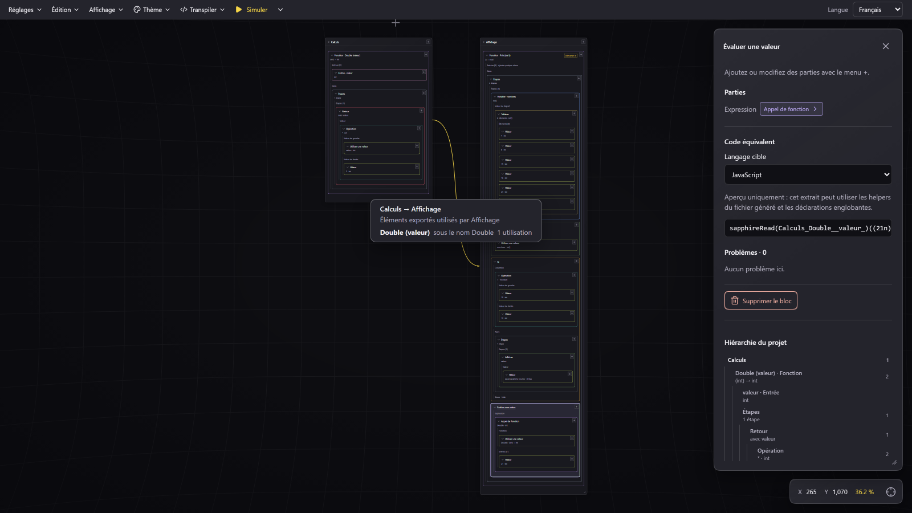
- Infobulle ancrée sur le point milieu de la courbe, dans la vue.
- Le trajet, dans le sens réel de la dépendance : exportateur puis récepteur.
- Les exportations réellement utilisées, avec le nom publié, le nom local du récepteur et le nombre d'utilisations. Un import jamais référencé n'apparaît pas.
- La courbe s'épaissit et change de marqueur de flèche pendant le survol ; un large chemin invisible sert de zone de capture, car le trait seul serait difficile à attraper.
12 · Le projet entier
Document completDeux modules, sept nœuds dans le premier, vingt-trois dans le second, une dépendance. L'état que la simulation va recevoir.

- Le point d'entrée, une fonction sans paramètre : condition exigée pour pouvoir simuler.
- La variable tableau, modifiable, initialisée avec six éléments.
- Le littéral de tableau, qui porte le type de ses éléments et non son propre type de variable.
- Le bloc conditionnel et ses deux branches internes.
- L'appel du
Doubleimporté — l'unique source de la flèche. - De l'autre côté, la fonction appelée dans son propre module, avec son paramètre.
- Le lien, désormais permanent, tant que l'usage existe.
13 · Notes et images
PrésentationLe rangement visuel a le droit de ne pas être du code. Deux cartes d'annotation existent, déplacables et redimensionnables, et elles restent hors du modèle logique, hors de l'AST et hors des commentaires de code générés.
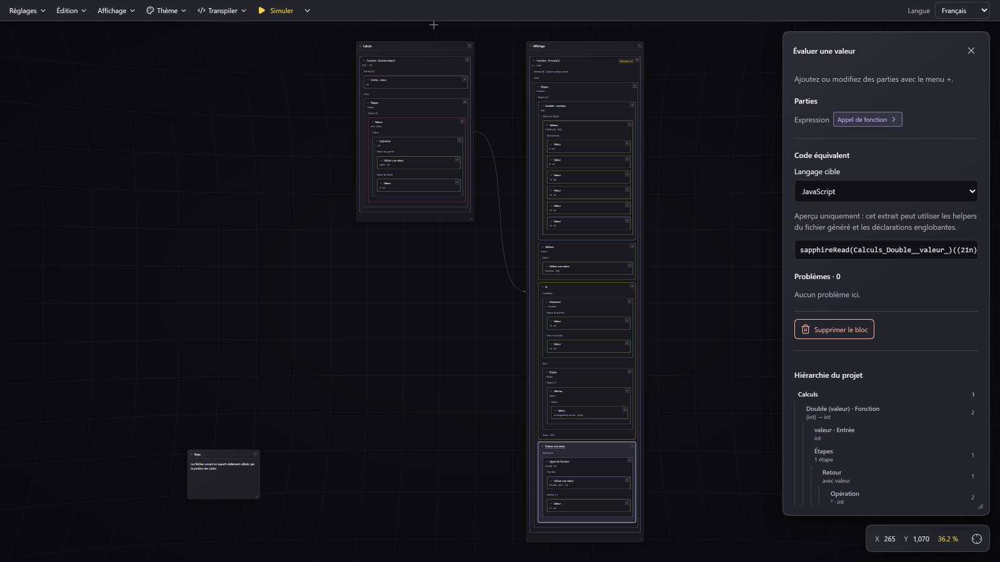
- Carte note : titre et texte libres, aucun effet sur l'analyse, la simulation ou la transpilation.
- Le texte est éditable en place ; il ne devient jamais un commentaire dans le code produit.
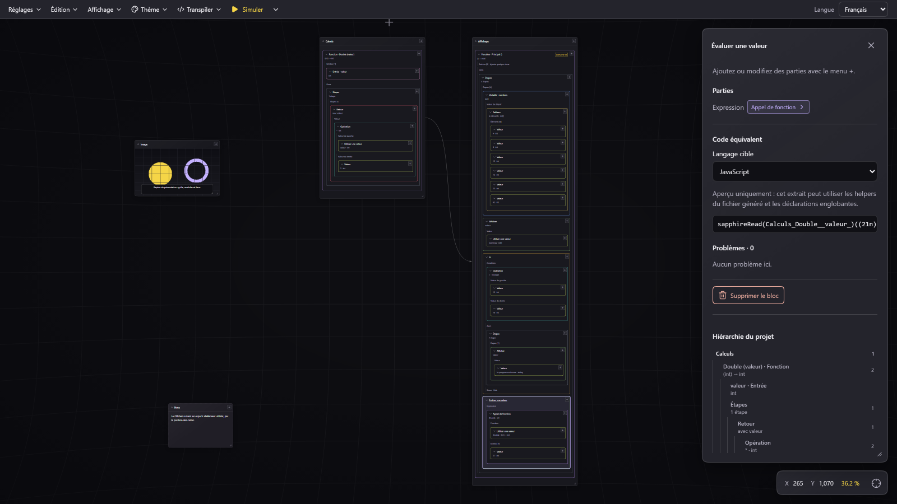
- Carte image : l'image est intégrée au document, pas pointée par une URL distante. Un chemin local n'est jamais lu implicitement depuis un fichier importé.
- Dépôt d'un fichier depuis l'explorateur, remplacement possible, suppression confirmée.
- Titre et légende, tous deux libres et locaux.
14 · Simuler et déboguer
Exécution localeRien ne s'exécute tout seul. Une action explicite lance un interpréteur local, déterministe, coupé de React, du DOM, de Neutralinojs et de tout réseau, avec un budget d'étapes et une profondeur d'appel bornés.
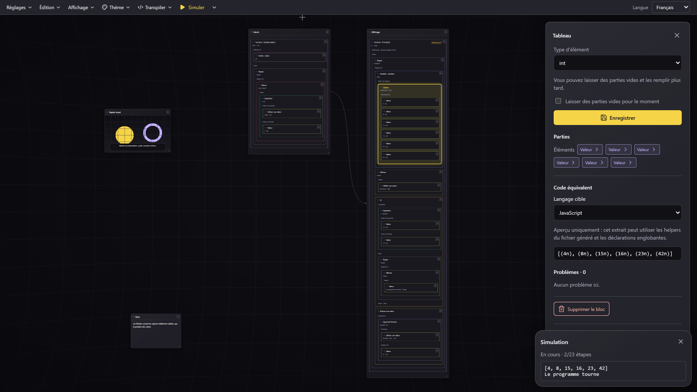
- Panneau de sortie : contenu en mémoire, sans fichier ni journal.
- Progression, en étapes exécutées sur le total de la trace.
- Le nœud en cours d'exécution est repéré dans l'arbre : l'animation suit le document, pas une copie.
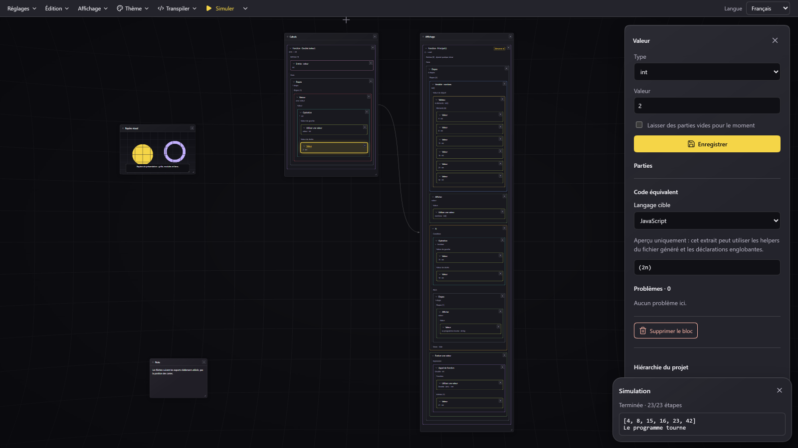
- Sortie de la simulation terminée.
- Une ligne par instruction
Afficherrencontrée, dans l'ordre réel d'exécution : le tableau, le texte de la branche vraie, puis le résultat de l'appel intermodule.
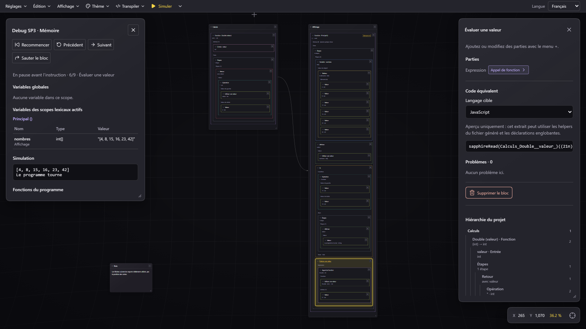
- Fenêtre de debug séparée, déplaçable et redimensionnable.
- Pas suivant, pas précédent, recommencer : la trace est un tableau d'identifiants, parcouru dans les deux sens, sans nouvelle exécution.
- État mémoire reconstitué à l'étape courante, pour lire les variables sans les modifier.
- Position dans la session.
- Le nœud ciblé est mis en évidence dans l'arbre : debug et document restent un seul et même état.
15 · Graphe de contrôle et dépendances
AnalyseDeux vues dérivées, produites à la demande sur un nœud cible, jamais pendant la saisie.
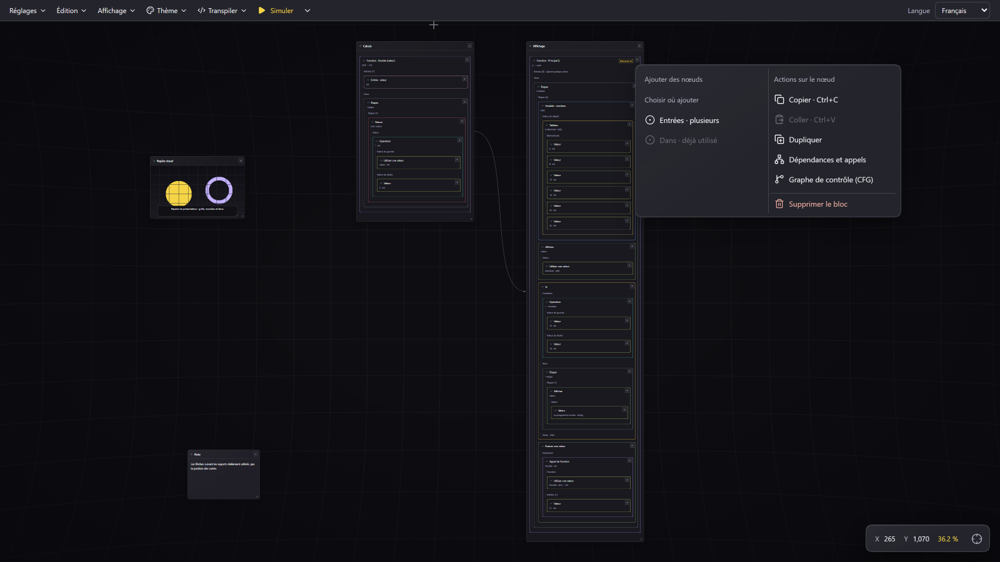
- Le menu du nœud Principal ().
- Deux analyses disponibles sur la cible sélectionnée : graphe de contrôle, puis dépendances et appels.
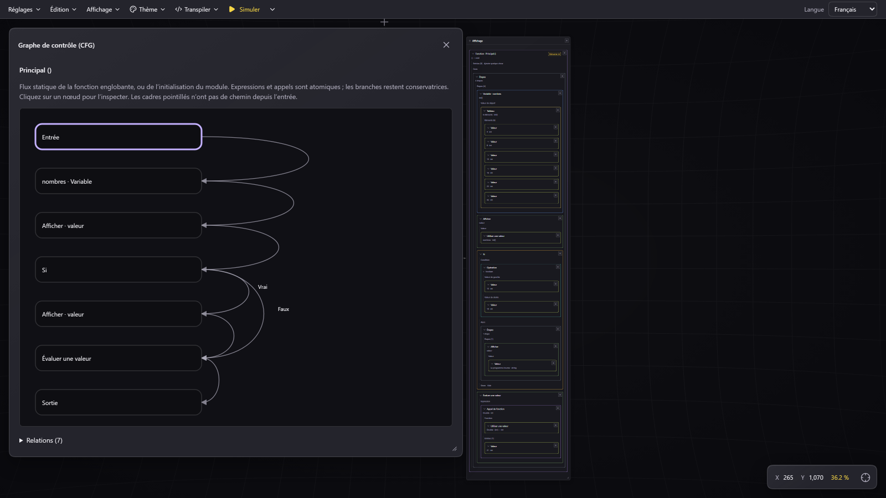
- Vue déplaçable, avec sa propre zone de tracé.
- Le CFG : sommets et arêtes, avec repli et recentrage sur la cible.
- Les relations affichées, issues de l'analyse existante — pas d'une seconde résolution des noms.
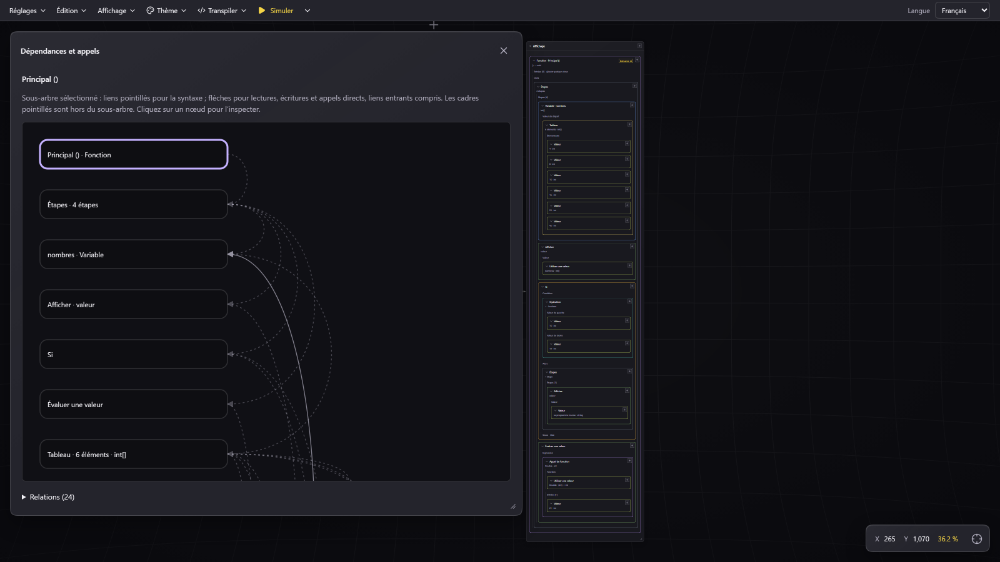
- Panneau des dépendances.
- Les descendants syntaxiques de la cible et leurs relations directes :
contains,reads,writes,calls,type. - Les entrants vers le sous-arbre sont conservés et les sommets extérieurs marqués
external; les références non résolues restent listées, sans être masquées.
16 · Transpiler
Traduction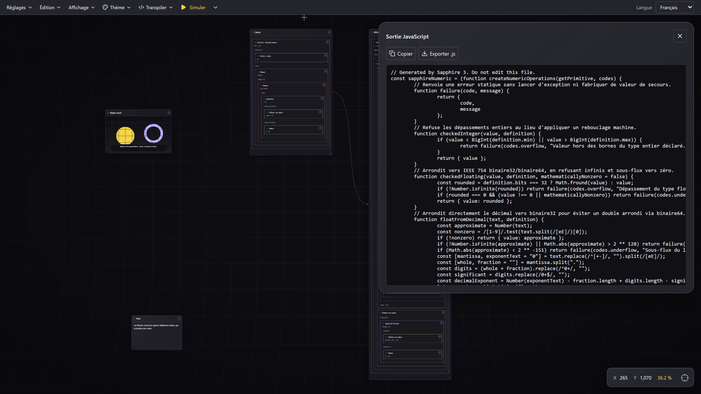
- Le panneau de transpilation, qui ne modifie jamais la source.
- Le code équivalent : déclarations de modules et de fonctions, initialisations globales exécutées dans
main(), appel final du point d'entrée désigné. Le fichier produit est autonome, sansimportniexport, et n'embarque pas les budgets du simulateur. - Choix de la cible. JavaScript et Python sont opérationnels ; C/C++ et Java sont présents mais annoncés non disponibles, sans génération partielle.
17 · Thèmes, langue, grille, zoom
PréférencesL'apparence et la langue sont des préférences locales, distinctes du document. Changer l'une ou l'autre ne touche ni aux données ni à l'analyse.
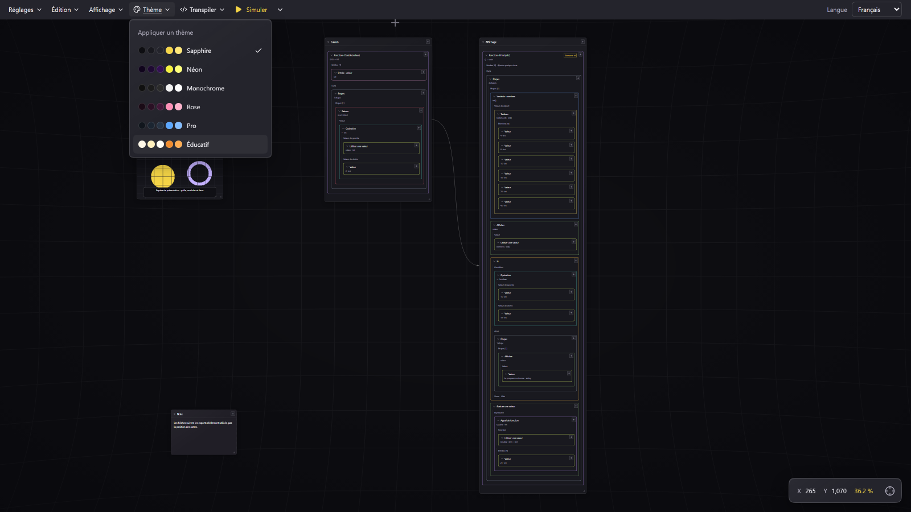
- Six thèmes, tous construits sur les mêmes jetons : fond, surface, bordure, primaire, sélection, diagnostics.
- Aperçu couleur par entrée, sélection immédiate, mémorisée en préférence locale.
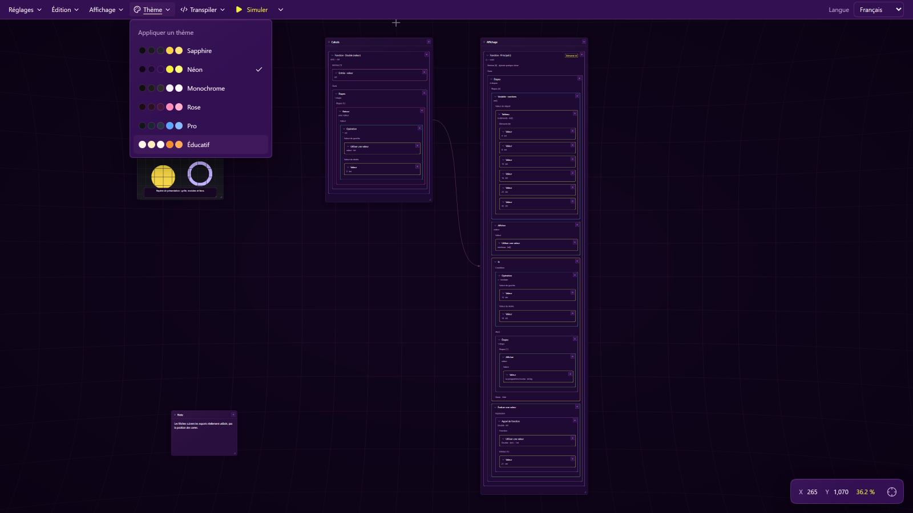
- Les cartes gardent leur structure et leurs couleurs de catégorie : un thème change la palette, pas la sémantique.
- La courbe et ses marqueurs suivent la palette du thème.
- Le volet, les boutons et les focus clavier se recalident sur les mêmes variables.
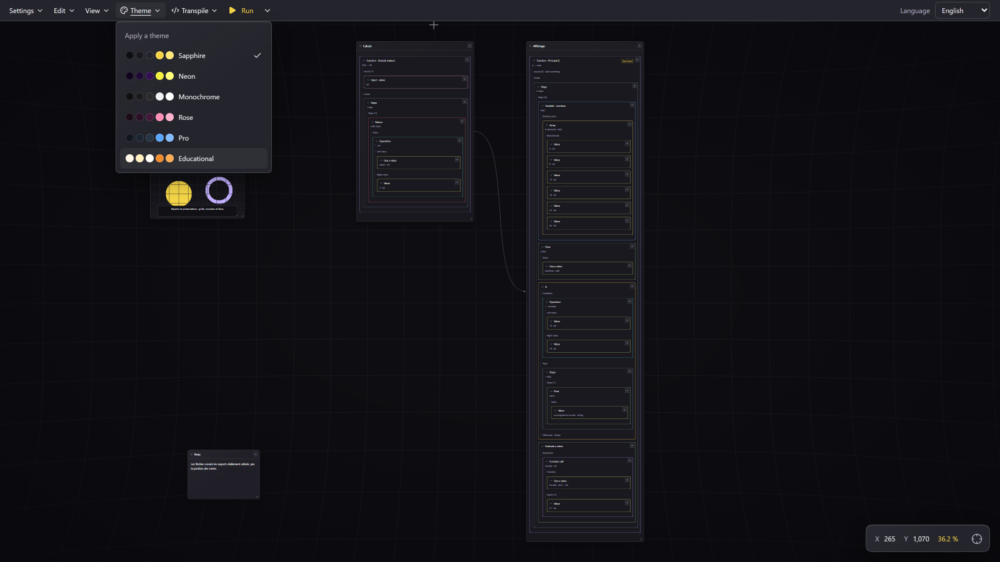
- Version anglaise du volet, catalogue centralisé dans l'application : les deux langues couvrent les libellés, les aides, les résumés, les erreurs et les dialogues natifs.
- Ce qui ne se traduit pas : les identifiants, les noms de types et d'opérateurs du langage, les contenus saisis et les sorties du programme.
DoubleresteDouble.
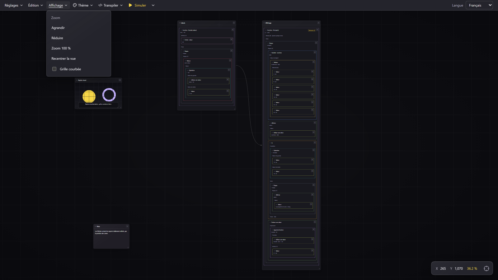
- Grille droite, commutable : utile pour aligner plusieurs cartes au pixel.
- Les liens restent indépendants du choix de grille.
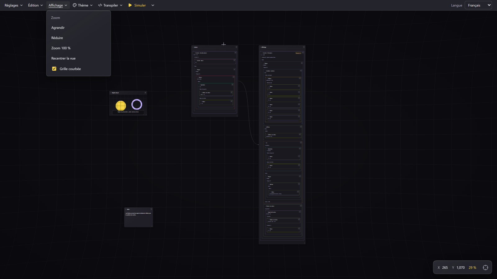
- Le pourcentage de zoom est affiché, avec un plafond à 400 % et aucun plancher applicatif.
- Les traits sont recalculés depuis les coordonnées monde : ils ne s'épaississent pas et ne se décalent pas.
- Le volet reste à l'échelle de l'interface : le zoom ne s'applique qu'au document.
18 · Ce que l'interface refuse
ValidationUn formulaire n'écrit que ce qui est cohérent ; et ce qui reste incohérent dans un fichier importé n'est pas détruit, il est signalé.
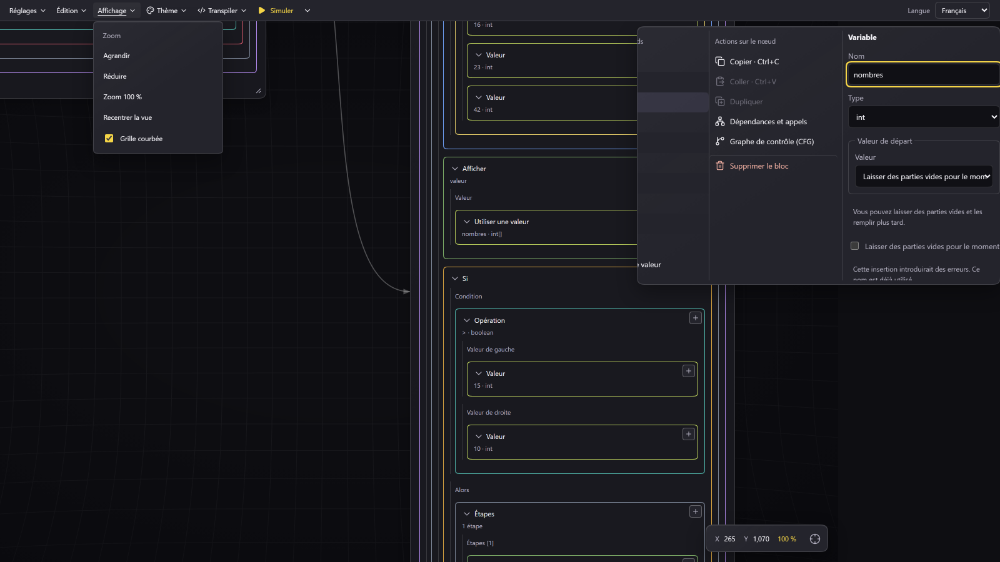
- Tentative de créer une seconde variable
nombresdans la même portée que la première. - Refus avec le code stable du moteur, traduit à l'affichage :
DECLARATION_CONFLICT. Le document n'a pas bougé, et le formulaire reste ouvert pour correction.
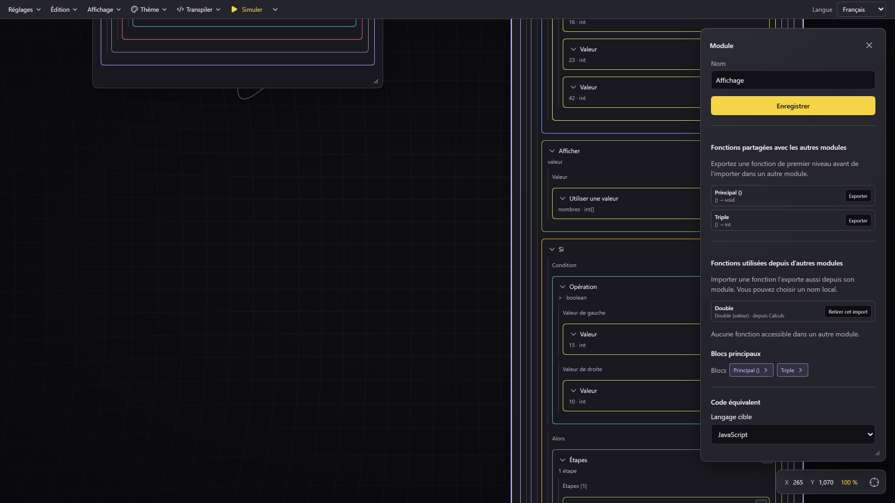
- Le panneau du module, avec la liste des diagnostics localisés.
- Un badge sur la ligne concernée dans l'arbre : l'incomplétude est visible là où elle se trouve, pas seulement dans un journal.
- Chaque diagnostic porte un code, une sévérité, un message et une localisation — module, nœud, champ. La représentation est conservée tant que la correction n'a pas été faite ; la génération et la simulation restent simplement bloquées.
19 · Le fichier .sp3
Persistance
Le document est un fichier choisi par l'utilisateur, jamais un répertoire imposé et jamais écrit en arrière-plan. Trois voies, toutes explicites : ouvrir, enregistrer, importer ou exporter.
- Une enveloppe workspace versionnée contient le document logique et les informations de présentation — positions des cartes, notes, images intégrées. Les deux formats sont distincts : le modèle logique ne dépend ni de la fenêtre ni de la mise en page.
- Un fichier
.sp3ou un JSON logique se lisent et s'écrivent par les dialogues natifs de l'application ;Ctrl+Senregistre le fichier courant. - Avant remplacement, la source est validée : en cas d'erreur ou d'annulation, le document en cours reste intact. Une version inconnue est conservée et signalée, jamais migrée en silence.
- Les préférences — langue, thème, cinq chemins récents — sont stockées à part, dans un répertoire persistant utilisateur, jamais à côté de l'exécutable.
Un document sans chemin (.sp3 non encore écrit) reste en mémoire jusqu'à sa première enregistrer ; une fois le fichier créé, chaque modification y est réécrite automatiquement (retard de 500 ms) et le même fichier est rouvert au prochain lancement.
20 · Limites assumées
Ce qui n'est pas finiCe site ne prétend pas que tout existe. Les limites ci-dessous sont celles du document technique, résumées honnêtement.
| Domaine | État réel |
|---|---|
| Sorties du simulateur | Une seule capacité : Afficher. Pas de saisie interactive, pas d'effet natif, pas de réseau, pas de journal persistant. |
| Exécution | Uniquement sur action explicite ; les vues d'exécution graphiques sont marquées « à venir » dans l'interface. |
| Langages cibles | JavaScript et Python opérationnels. C/C++ et Java désactivés — aucune promesse de génération. |
| Analyse | Conservatrice : aucune preuve générale sur les valeurs, les comparaisons numériques, les dépendances globales ou la terminaison. |
| Modèle objet | Évoqué comme direction, aucun contrat décidé. Pas de classes ni de structures dans le modèle source actuel ; TypeDeclaration est un alias transparent. |
| Sous-modules | Absents : la hiérarchie des portées lexicales ne doit pas être confondue avec un rangement de modules. |
| Migrations | Aucune migration automatique. Une source d'une autre version est conservée et diagnostiquée. |
| Documentation | Évolutive : elle décrit l'incrément livré, pas le plan. Les sections manquantes signifient des fonctionnalités non encore demandées. |
Continuer avec le modèle AST — ce que tout cela devient quand on regarde le document lui-même.